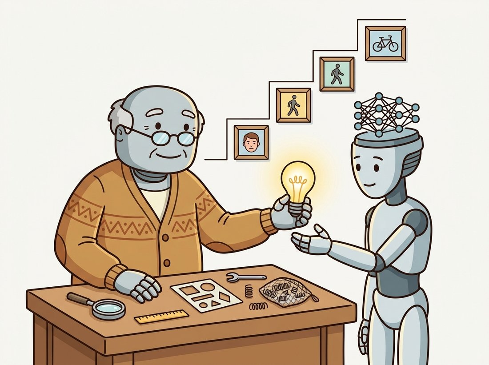
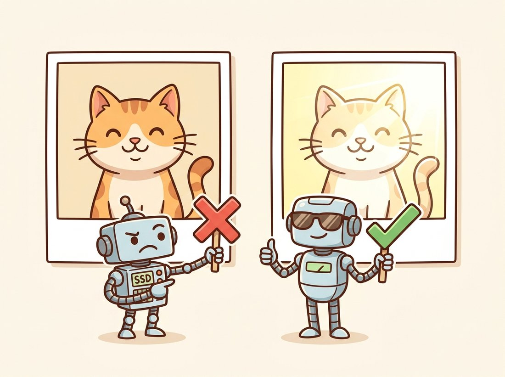

"I am very good at recognizing this exact cat, at this exact size, in this exact light, from this exact angle. For any other cat, please file a separate request."
An Overly Literal Template
The simplest possible recognizer compares pixels to pixels, and the precise way it fails is the blueprint for everything that replaces it. Template matching slides a stored patch over an image and reports where the pixels agree best. It needs no training, no features, no abstraction, and on a controlled factory line it is unbeatable. The instant the world adds a degree of rotation, a notch of brightness, or a slightly different instance of the object, the agreement collapses. This section makes the method precise (the two matching scores that matter, why one is robust to lighting and the other is not, how to search across scale) and then dissects the brittleness. Every later section in this chapter, and the learned features of Chapter 25, is an answer to a weakness you will see here in its purest form.
This chapter opens the recognition half of classical vision, and it is fitting to start where the field itself started: by asking whether an object is present simply because its pixels are present. In the previous chapter we tracked brightness patterns through time (Chapter 15); now we ask a static question of a single frame. Is the target here, and if so, where? Template matching answers with the most direct measurement imaginable, a pixel-by-pixel comparison, and the value of studying it is not that you will use it for hard recognition (you will not) but that its failure modes name the problems the rest of the chapter solves. The illustration below frames the arc of the whole chapter: the hand-crafted pipeline did not vanish, it handed its job to the learned methods that come later.

1. The Idea: Recognition as Pixel Comparison Beginner
A template is a small image $T$ of the thing you want to find: a logo, a part, a face cropped tight. A larger image $I$ may or may not contain it. Template matching places $T$ at every possible position $(x, y)$ in $I$, scores how well the underlying patch resembles $T$, and reports the position with the best score. The whole method is one loop over positions and one scoring function inside it. The only real decision is which scoring function, and that decision turns out to carry most of the method's behavior.
The most intuitive score is the sum of squared differences (SSD): subtract the template from the patch pixel by pixel, square, and sum. Writing the patch of $I$ anchored at $(x, y)$ as $I_{x,y}$,
$$ \text{SSD}(x, y) \;=\; \sum_{u, v} \big( I(x + u,\, y + v) - T(u, v) \big)^2 . $$
A perfect match gives zero; the more the patch differs, the larger the score. SSD is fast and obvious, and it has one fatal weakness that the next subsection fixes: it measures absolute brightness, so a correctly aligned but slightly brighter copy of the template scores terribly. Before fixing that, it helps to see what the search actually produces. The code below slides a template across an image and visualizes the score surface, the field that template matching is implicitly hill-climbing.
# Slide a template over a scene and score every placement with SSD,
# building the full score surface so the match is the surface minimum.
# The explicit double loop exposes the cost the library call later hides.
import cv2
import numpy as np
scene = cv2.imread("circuit_board.png", cv2.IMREAD_GRAYSCALE).astype(np.float32)
template = cv2.imread("component.png", cv2.IMREAD_GRAYSCALE).astype(np.float32)
th, tw = template.shape
# SSD by hand over every valid top-left position.
H, W = scene.shape
ssd = np.zeros((H - th + 1, W - tw + 1), dtype=np.float32)
for y in range(ssd.shape[0]):
for x in range(ssd.shape[1]):
patch = scene[y:y + th, x:x + tw]
diff = patch - template
ssd[y, x] = np.sum(diff * diff)
y_best, x_best = np.unravel_index(np.argmin(ssd), ssd.shape) # SSD: lower is better
print(f"best match at (x={x_best}, y={y_best}), SSD={ssd[y_best, x_best]:.0f}")
# best match at (x=412, y=188), SSD=20374
The score array ssd is itself an image, one value per candidate position, and its global minimum is the reported detection. Run it and the loop is visibly the bottleneck: an order of $H \cdot W \cdot t_h \cdot t_w$ multiply-adds. The library shortcut at the end of this section collapses both the loop and the scoring into a single vectorized call, but first we must repair the brightness problem, because the fix changes the scoring function itself.
2. Normalized Cross-Correlation: Surviving Brightness Intermediate
SSD conflates two different kinds of difference: difference in pattern (the thing we care about) and difference in overall brightness (the thing we usually do not). Recall from Chapter 2 that adding a constant to every pixel and scaling every pixel by a constant are exactly the affine intensity changes that auto-exposure and gain control introduce. We want a score that ignores both. The answer is normalized cross-correlation (NCC), which subtracts each region's own mean and divides by its own standard deviation before comparing. Let $\bar T$ and $\bar I_{x,y}$ be the means of the template and the patch:
$$ \text{NCC}(x, y) \;=\; \frac{\displaystyle\sum_{u,v} \big( I(x+u, y+v) - \bar I_{x,y} \big)\big( T(u,v) - \bar T \big)}{\sqrt{\displaystyle\sum_{u,v}\big( I(x+u, y+v) - \bar I_{x,y} \big)^2}\,\sqrt{\displaystyle\sum_{u,v}\big( T(u,v) - \bar T \big)^2}} . $$
The numerator is a dot product of the two mean-removed patches; the denominator normalizes both to unit length. NCC is therefore the cosine of the angle between the template and the patch viewed as vectors, and it lives in $[-1, 1]$: a value of $1$ is a perfect match up to any brightness offset and any positive contrast scaling, $0$ is uncorrelated, and $-1$ is a perfect photographic negative. Subtracting the mean buys invariance to additive lighting changes; dividing by the standard deviation buys invariance to multiplicative ones. That single normalization is why NCC, not SSD, is the score that ships in production template matchers.
SSD says two patches match when their raw pixels are close. NCC says they match when their mean-removed, contrast-normalized pixels point the same direction. Neither is "more correct"; each declares which transformations it agrees to ignore. SSD ignores nothing and so breaks under lighting; NCC ignores affine intensity changes and so survives them, but it still breaks under rotation, scale, and a different instance of the object. Every recognition method in this book can be read this way: as a statement about which changes leave the answer unchanged. The history of recognition is the history of widening that set of ignored changes, from "none" (SSD) to "affine intensity" (NCC) to "viewpoint and instance" (the learned features of Chapter 25).
Figure 16.1.1 makes the difference concrete. The same template is matched against a patch that is identical in pattern but uniformly brighter. SSD reports a large (bad) score because every pixel differs by the brightness offset; NCC reports near $1$ because the offset vanishes when each region is centered on its own mean. The illustration below dramatizes the same contrast: SSD panics at a change of lighting while NCC shrugs it off.

OpenCV exposes both scores, plus a zero-mean SSD and a coefficient form, through one function. The code below runs NCC across the whole scene and locates the peak, the production-grade equivalent of the hand-written loop above.
# Run normalized cross-correlation across the whole scene and read off
# the peak. TM_CCOEFF_NORMED is the mean-removed, contrast-normalized score,
# so the match survives the brightness offsets that defeat raw SSD.
import cv2
import numpy as np
scene = cv2.imread("circuit_board.png", cv2.IMREAD_GRAYSCALE)
template = cv2.imread("component.png", cv2.IMREAD_GRAYSCALE)
th, tw = template.shape
# TM_CCOEFF_NORMED is normalized cross-correlation on mean-removed patches.
result = cv2.matchTemplate(scene, template, cv2.TM_CCOEFF_NORMED)
min_val, max_val, min_loc, max_loc = cv2.minMaxLoc(result) # NCC: higher is better
print(f"peak NCC = {max_val:.3f} at {max_loc}")
top_left = max_loc
bottom_right = (top_left[0] + tw, top_left[1] + th)
# Accept the detection only if the peak clears a confidence threshold.
if max_val > 0.8:
print("component found")
else:
print("no confident match")
# peak NCC = 0.961 at (412, 188)
# component foundmatchTemplate: TM_CCOEFF_NORMED implements the mean-removed, contrast-normalized score, and minMaxLoc reads off the peak. The 0.8 threshold is the accept/reject decision every template matcher must make.Because both slide a small array over a larger image and sum products, it is tempting to call template matching "convolution," especially after meeting the convolution of Chapter 3. In fact template matching is cross-correlation, not convolution, and the difference is one step: true convolution flips the kernel (rotates it $180$ degrees) before sliding, while matchTemplate slides the template as-is so that the score peaks when the patch looks like the template, not like its mirror image. For a symmetric kernel the two coincide, which is why the distinction is so easy to lose, but for an asymmetric template (a letter, a logo, a face) flipping it would match the wrong thing. The library shortcut below evaluates the cross-correlation numerator via the frequency domain, the same machinery as fast convolution, but the operation it computes is correlation. Reserve the word "convolution" for the flipped-kernel case. The naming subtlety carries forward: the convolutional layer of Chapter 19 is itself implemented as cross-correlation and inherits exactly this confusion.
3. Searching Across Scale Intermediate
A template has exactly one size. If the object in the scene is larger or smaller than the stored patch, even a perfect-instance match scores poorly, because corresponding pixels no longer line up. The fix is to search over scale as well as position: resize either the template or the scene across a range of factors and keep the best score over all of them. This is the image pyramid of Chapter 4 applied to recognition, and it is the same coarse-to-fine machinery that the sliding-window detectors of Section 16.3 and Section 16.4 will lean on. Figure 16.1.2 shows the structure: one template, many scaled copies of the scene, one score surface per scale, and a single global maximum chosen across the stack.
The code that realizes Figure 16.1.2 wraps the single-scale match in a loop over scale factors and tracks the best result globally.
# Search for the template across a pyramid of scaled scenes, keeping the
# single best NCC peak over all scales, then map that location back to
# full-resolution coordinates. This adds scale invariance the template lacks.
import cv2
import numpy as np
scene = cv2.imread("scene.png", cv2.IMREAD_GRAYSCALE)
template = cv2.imread("logo.png", cv2.IMREAD_GRAYSCALE)
th, tw = template.shape
best = {"score": -1.0, "loc": None, "scale": None}
for scale in np.linspace(1.0, 0.4, 12): # shrink the scene, keep T fixed
resized = cv2.resize(scene, None, fx=scale, fy=scale, interpolation=cv2.INTER_AREA)
if resized.shape[0] < th or resized.shape[1] < tw:
break # template no longer fits
res = cv2.matchTemplate(resized, template, cv2.TM_CCOEFF_NORMED)
_, max_val, _, max_loc = cv2.minMaxLoc(res)
if max_val > best["score"]:
best.update(score=max_val, loc=max_loc, scale=scale)
# Map the location back to the original (full-resolution) scene coordinates.
sx, sy = best["loc"]
orig = (int(sx / best["scale"]), int(sy / best["scale"]))
print(f"best score {best['score']:.3f} at scale {best['scale']:.2f}, scene xy {orig}")
# best score 0.934 at scale 0.71, scene xy (588, 264)Scale invariance cost us a factor of about twelve in this example. Adding rotation invariance the same brute-force way (one match per discrete angle) multiplies again: thirty-six orientations make it 432 passes. Adding small affine warps multiplies once more. This combinatorial blowup is precisely why the field abandoned "search every pose" in favor of features that are invariant by construction. SIFT (Chapter 10) computes one descriptor that is already scale and rotation invariant, replacing the entire pose loop with a single representation. Template matching's exponential pose search is the problem; invariant features are the answer.
4. Where Template Matching Still Wins Beginner
None of this section's criticism means template matching is obsolete. In environments where the imaging conditions are pinned down, it is often the right tool precisely because it needs no training data and behaves predictably. Industrial machine vision is the heartland: a fixed camera, controlled lighting, and a part presented at a known orientation make the template's missing invariances irrelevant, because nothing in the scene varies anyway. Printed-circuit-board inspection, fiducial alignment, optical character verification on labels, and gauge reading all run on normalized cross-correlation today, and they run fast and certifiably. The lesson is not "templates are bad" but "templates are local": they recognize a specific appearance under specific conditions, and when you can guarantee those conditions, that specificity becomes a feature.
Who & situation: a contract electronics manufacturer running a surface-mount placement line, where a robot must drop tiny components onto pads with sub-pixel accuracy. Each board carries small printed fiducial crosses for the machine to align against. Problem: the team's first instinct was a learned keypoint detector, but it was overkill, needed labeled data they did not have, and gave non-deterministic results that the quality auditors refused to certify. Decision: they replaced it with a single normalized-cross-correlation match against a clean image of the fiducial cross, searching a small window around the nominal position only, with a fixed accept threshold of $0.9$ and sub-pixel peak refinement by fitting a parabola to the NCC surface around the maximum. Result: alignment error dropped below a quarter pixel, the cycle time fell because the search window was tiny, and the auditors signed off because the method was deterministic and explainable. Lesson: when lighting, pose, and instance are all controlled, the missing invariances stop being weaknesses, and template matching's simplicity and determinism become exactly what a regulated process needs.
5. The Five Weaknesses That Define the Chapter Intermediate
Take template matching out of the controlled environment and it breaks in five characteristic ways, each of which names a problem the rest of this chapter (and Part III) attacks. First, intensity: SSD breaks under any lighting change, which NCC partly repairs, but neither survives colored light or shadows. Second, geometry: rotation, scale, and viewpoint all misalign pixels, and we just saw that searching over poses is exponentially expensive. Third, intra-class variation: a template of one chair cannot find a different chair, because recognition by appearance does not generalize across instances of a category. Fourth, deformation: a person bending or a face smiling moves pixels non-rigidly, and no single rigid template covers the range, which is exactly the gap that deformable part models in Section 16.5 set out to fill. Fifth, clutter and occlusion: a partially hidden object presents only some of its pixels, and a whole-template score punishes the missing ones.
The unifying diagnosis is that pixels are the wrong representation. They are not invariant to anything, they do not generalize across instances, and they do not degrade gracefully. The fix that organizes the next four sections is to replace raw pixels with engineered features chosen to be robust to some of these variations: quantized local descriptors in Section 16.2, oriented-gradient histograms in Section 16.3, and brightness-contrast features in Section 16.4. Each buys back some invariance that templates lack, at the cost of a feature you had to design. That cost, the human labor of feature design, is itself the weakness that Section 16.6 identifies as the paradigm's ceiling.
Template matching never died; it moved up a level of abstraction. Modern visual-prompt detectors match a template not in pixel space but in the embedding space of a foundation model, where a single example of an object can be matched against any image robustly to pose and lighting because the embedding already encodes those invariances. T-Rex2 (Jiang et al., ECCV 2024, arXiv:2403.14610) detects arbitrary objects from one visual example by correlating its features against an image, the direct descendant of the NCC peak search in this section but operating on representations that solve the five weaknesses by construction. CLIP-based open-vocabulary detectors play the same game with text "templates," and few-shot counting models like Counting-DETR match a handful of exemplar boxes against a crowded scene. The geometry of this section, slide a query, find the peak, accept above a threshold, is unchanged; only the space in which the comparison happens has been upgraded from pixels to the learned features of Chapter 25 and the CLIP embeddings of Chapter 34.
The hand-written SSD loop in Section 1 is roughly fifteen lines and runs in pure Python at a snail's pace. OpenCV's matchTemplate replaces it with a single vectorized, SIMD-accelerated call that computes the entire score surface for any of six matching metrics. Internally it uses the convolution theorem from Chapter 4: the cross-correlation numerator is evaluated as a multiplication in the frequency domain, turning the naive $O(H W t_h t_w)$ cost into roughly $O(H W \log(H W))$, which is why a full NCC scan of a megapixel image finishes in milliseconds.
# The whole hand-written search in two calls: matchTemplate computes the
# entire NCC score surface via FFT-based correlation, and minMaxLoc reads
# off the detection peak and its location.
import cv2
result = cv2.matchTemplate(scene, template, cv2.TM_CCOEFF_NORMED)
_, score, _, loc = cv2.minMaxLoc(result) # peak NCC and its (x, y) locationmatchTemplate computes every position's score via FFT-based correlation and minMaxLoc reads off the detection, collapsing fifteen lines of Python loop into one accelerated call.For each transformation applied to a patch that otherwise matches the template, state whether SSD, NCC, or neither still reports a strong match, and explain in one sentence why: (a) add $40$ to every pixel; (b) multiply every pixel by $1.3$; (c) rotate the patch by $15$ degrees; (d) invert the patch to its photographic negative; (e) replace half the patch with a different object (occlusion). Then propose which of the five weaknesses from Section 5 each transformation exercises.
Take any image, crop a small distinctive patch as a template, and run cv2.matchTemplate with all six methods (TM_SQDIFF, TM_SQDIFF_NORMED, TM_CCORR, TM_CCORR_NORMED, TM_CCOEFF, TM_CCOEFF_NORMED). Display each score surface as a heatmap and mark the detected location. Then brighten the whole image by adding a constant and re-run all six. Which methods move their peak, and which hold? Confirm empirically that the un-normalized methods drift and the normalized ones do not, and write one sentence linking the result to the formula for each score.
Extend the multi-scale matcher to also search over rotation by rotating the template through a set of angles before each match. Time the full search as you increase the number of scales and angles, and tabulate wall-clock time against the number of poses. Fit the trend and estimate how long an exhaustive search over $12$ scales, $36$ rotations, and a small set of shears would take on a $1$-megapixel image. Use the result to argue, in a short paragraph, why invariant features (Chapter 10) replaced exhaustive pose search rather than merely accelerating it.